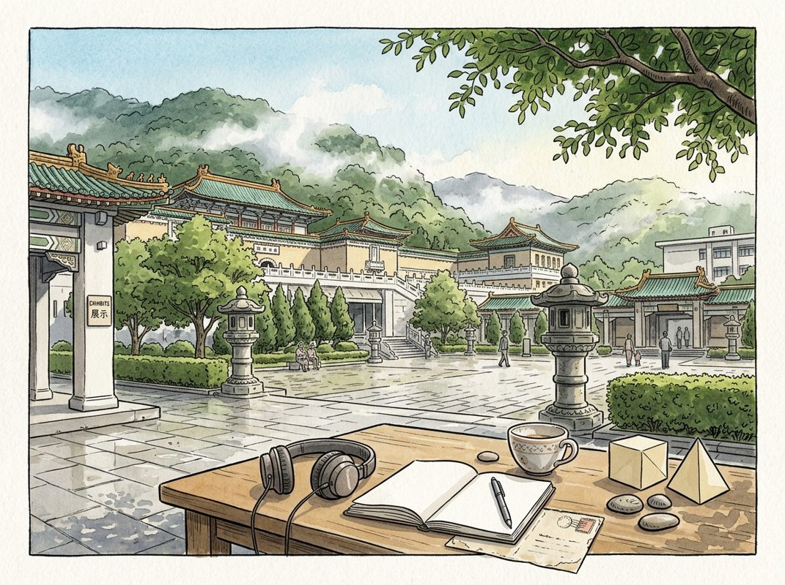

9/8

播客简报 2026-09-08
历史精选
Mars Inc. (the chocolate story)
来源：Acquired
原链接：https://www.acquired.fm/episodes/mars-inc-the-chocolate-story
状态：已读网页 transcript
这期播客深入剖析了玛氏公司（Mars Inc.）从一个屡败屡战的家族小作坊，如何通过创新、工业化生产和卓越的商业策略，成长为全球糖果和宠物食品巨头，甚至在经济大萧条时期逆势增长。它揭示了玛氏家族的神秘面纱，以及其与好时、雀巢等行业巨头之间错综复杂的历史。这期节目适合所有对商业史、家族企业、快消品行业以及巧克力制作过程感兴趣的听众。
- 玛氏公司的惊人规模与神秘面纱：玛氏公司，这家拥有M&M's、士力架等世界知名糖果品牌的企业，其规模远超人们想象。去年营收超过500亿美元，甚至超越了可口可乐公司，是美国前五大私人公司之一。玛氏家族是美国第二富有的家族，但他们极其低调和隐秘，甚至比宜家创始人坎普拉德家族更为神秘。播客指出，玛氏的成功并非偶然，其背后是贯穿两次世界大战、技术创新和激烈家族冲突的精彩故事。除了糖果，玛氏还拥有宝路狗粮、伟嘉猫粮、本大叔米饭以及Kind Bars等多元化业务，展现了其卓越的多元化战略。
- 弗兰克·玛氏的屡败屡战与巧克力时代的曙光：玛氏公司的创始人弗兰克·玛氏（Frank Mars）的创业之路充满坎坷。他童年因小儿麻痹症无法外出玩耍，在家与母亲学习制作糖果。在20世纪初，糖果市场以无品牌、易腐烂的“一分钱糖果”为主，主要面向儿童。弗兰克在明尼阿波利斯、西雅图和塔科马先后三次创业失败，甚至因此与第一任妻子离婚，儿子福雷斯特（Forrest Mars）也被送走。直到1920年，弗兰克回到明尼阿波利斯，第四次尝试创业。此时，巧克力开始在美国兴起，这为玛氏的未来奠定了基础，尽管当时他仍依赖好时（Hershey）的巧克力原料。
- 好时：美国巧克力的先行者与味觉塑造者：在弗兰克·玛氏挣扎之际，米尔顿·好时（Milton Hershey）已成为美国巧克力的先驱。好时在1893年芝加哥世博会上首次接触巧克力，并从瑞士雀巢公司（Nestlé）学习了牛奶巧克力的制作技术。经过多年摸索，好时成功开发出独特的牛奶巧克力配方（带有微酸风味，成为美国人对巧克力的味觉记忆），并在宾夕法尼亚州建立了大规模生产工厂。好时以5美分的低价策略和广泛的分销网络，使巧克力普及全国。第一次世界大战期间，好时为美军提供巧克力口粮，进一步巩固了其市场地位。在大萧条时期，好时成为其他糖果制造商的巧克力原料供应商，如同“巧克力界的AWS”，赚得盆满钵满。
- 巧克力的复杂工艺与牛奶巧克力的诞生：制作巧克力是一个极其复杂的过程。从可可果的采摘、发酵、干燥，到工厂的烘焙、去壳（得到可可豆碎粒），再到研磨、精炼（Conching，由瑞士巧克力商鲁道夫·莲特在1879年偶然发现，使巧克力变得丝滑），以及调温（Tempering，使巧克力具有光泽和脆裂感），每一步都至关重要。牛奶巧克力的发明则归功于瑞士的亨利·雀巢（Henri Nestlé）和丹尼尔·彼得（Daniel Peter）。雀巢最初为解决婴儿死亡率问题发明了婴儿配方奶粉。彼得利用雀巢的浓缩牛奶，克服了水油不溶、易腐败等难题，最终成功将牛奶与可可结合，创造出更柔滑、更受欢迎的牛奶巧克力，极大地拓展了巧克力市场。
- 福雷斯特·玛氏的回归与“银河棒”的诞生：1923年，弗兰克与他疏远已久的儿子福雷斯特·玛氏（Forrest Mars）戏剧性地重逢。当时19岁的福雷斯特在芝加哥因推销香烟被捕，打电话给父亲求助。父子在午餐时，福雷斯特提出将麦芽奶昔的口味融入糖果棒中。尽管传说成分居多，但弗兰克确实在1924年推出了“银河棒”（Milky Way），并取得了巨大成功，当年销售额从7.3万美元飙升至79.3万美元。玛氏公司成为首批将糖果棒生产工业化的企业之一，通过机械化生产“计数线”（count lines），实现了大规模标准化生产，而非传统的手工制作和区域分销。
Amphenol: The Nervous System for Electronics - [Business Breakdowns, EP.231]
来源：Business Breakdowns
原链接：https://joincolossus.com/episode/amphenol-the-ner…-for-electronics/
状态：已读完整音频 transcript
这期播客深入剖析了工业巨头安费诺（Amphenol）如何通过提供任务关键型电子连接器和传感器，结合去中心化运营和纪律性并购，成为一个在“万物电气化和数字化”浪潮中持续增长的隐形冠军。它适合对工业领域长期复合增长型企业、并购策略以及穿越周期韧性感兴趣的投资者和商业观察者。
- 安费诺：电子世界的“神经系统”：安费诺（Amphenol）是一家市值约1500亿美元、年营收近200亿美元的工业巨头，其产品遍布现代电子设备的每一个角落，被形象地称为“现代电子设备的神经系统”。它主要生产连接器、传感器和互连系统，确保电力、信号和数据在各种高性能应用中可靠传输。从汽车、飞机到智能手机、医疗设备乃至AI数据中心，安费诺的产品无处不在。其核心商业模式在于提供关键任务部件，这些部件在客户物料清单中占比虽小，但一旦失效后果严重，转换成本极高，客户看重的是其产品带来的“系统不会失效的信心”。过去二十年，安费诺通过有机增长和审慎收购，实现了营收和盈利的稳健复合增长，目前正受益于人工智能带来的巨大投资周期。
- 百年基业的四大支柱：安费诺的百年基业由创新、去中心化自治、财务纪律和多元化四大核心主题塑造。其创新基因源于创始人Arthur Smith，从早期无线电到雷达，再到如今的电动汽车和AI服务器，始终走在技术前沿。公司50万种定制产品中，约25%的年销售额来自过去四年推出的新品，作为设计伙伴提供高可靠性方案。运营上，安费诺采取高度去中心化的模式，全球140位总经理拥有独立的盈亏责任和决策权，确保快速响应客户需求。财务上，公司秉持严格的纪律和成本控制文化，源于80年代的杠杆收购，总部精简、全球化生产布局节俭务实，有效抵御外部冲击。最后，安费诺通过持续的多元化战略，避免了对单一市场的过度依赖，无单一市场超25%营收，最大客户不超3%，这种广度使其成为天然的“减震器”，确保了业务的韧性。
- 驱动增长的结构性趋势与核心业务：安费诺的增长主要得益于“万物电气化和数字化”的结构性大趋势，设备智能化、电子化提升其单品内容价值。公司业务分为三大部门：恶劣环境解决方案（HES）、通信解决方案和互连与传感系统（ISS）。HES约占营收的30%，利润率约25%，专注于为汽车、航空航天、工业和太空等关键任务应用提供坚固耐用的连接器和线缆组件，产品需耐极端条件，阿波罗任务亦有应用。通信解决方案约占营收的40%，利润率约25%，提供高速铜缆、光纤连接器、射频连接器及天线等，广泛应用于数据中心、宽带网络、5G和智能手机。受益于AI服务器需求，是增长最快部门。ISS约占营收的30%，利润率约19%，是安费诺从连接器向传感技术拓展的战略性布局，应用于电动汽车电池监控、工业机器人和医疗成像等领域，成功使单车内容价值翻倍。
- 多元化市场布局与增长引擎：安费诺营收分布八大终端市场，彰显多元化优势。汽车市场（约15%营收）正经历电动化转型，电动汽车对连接器内容需求大增，单车内容价值增速远超汽车产量。IT和数据通信市场（约25%营收）是当前焦点，AI服务器对连接器内容需求是传统服务器的50至100倍，去年有机增长56%，今年或再翻倍，未来增速或正常化，但加速计算趋势持续驱动需求。工业市场（约20%营收）涵盖工厂自动化、机器人、能源等，受益于工厂数字化、工业机器人兴起和能源转型，短期受去库存影响，长期仍中高个位数增长。航空航天与国防（约15%营收）是长期稳定业务，产品进入平台后粘性极高，受益于商用航空复苏、国防开支增长。移动设备（7%）和通信网络（11%）提供规模、技术和多元化，虽周期性强，但组合确保增长韧性与稳定性。
- 竞争格局与市场碎片化：全球连接器市场约800-900亿美元，计入传感器等可达数千亿，安费诺目前营收约200亿美元，市场份额约14-15%。历史上，泰科电子（TE Connectivity）曾是最大竞争对手，市场份额约15%，近60%营收来自汽车，运营更集中，利润率约18%。安费诺则更均衡，运营利润率近25%，预计未来一两年将超越泰科。其他主要竞争者包括科氏工业旗下的莫仕（Molex），在消费电子和电信连接器领域有优势，但更偏向商品化；以及专注于传感器的森萨塔（Sensata），缺乏互连产品的广度。值得注意的是，即使前三大厂商的市场份额也仅占30%多，前十大厂商不足50%，市场高度碎片化，数千家小型公司并存。这种碎片化正是安费诺通过有机增长和系统性并购实现规模扩张的巨大机遇。